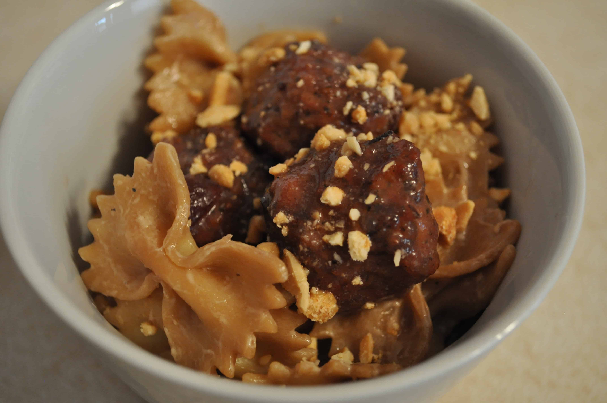

Number 1
Description
This dish is known as "Number 1" because at one point in time I was eating it at least three days a week and it was the most frequent thing I cooked. It developed slowly over many iterations into the dish you see before you. It's vaguely reminiscent of a Thai peanut sauce noodle dish but much more Americanized and bastardized. The peanut butter lends it a creamy texture while the soy sauce gives it a lot of umami.
Ingredients
- Pasta (preferably farfalle)
- Broccoli
- Red pepper
- Mushrooms
- Field Roast sausage (apple sage flavor)
- Garlic
- Yellow onion
- Peanut butter
- Soy sauce
- Rice vinegar
- Cooking oil
- Salt
Steps
- Slice the Field Roast thinly, on a bias
- Mince the garlic and chop the onion
- Cut the broccoli crowns off the stems and seperate the crowns into bite-sized pieces
- Peel the stems and cut them into bite-sized pieces
- Chop the red pepper and slice the mushrooms
- Boil water in a large pot, adding a heaping chunk of salt
- Warm a small pan on medium heat
- When the pan is hot, add some oil and let it warm up
- When the oil is hot, add the sliced Field Roast, stirring occasionally
- In a separate pot, heat oil and add garlic
- As the garlic warms, add the onion
- Once the onion starts to become transparent, add the broccoli stems
- After the broccoli stems have cooked a little, add the crowns
- When the broccoli has softened a little, add the peppers and mushrooms
- Add the cooked Field Roast to the pot of vegetables and keep warm on low heat
- When the pot is boiling, add the pasta
- After several minutes, taste the pasta. When it is still a little crunchy (just before al dente), drain while reserving a small amount of the pasta water
- Combine the pasta, reserved pasta water, and the pot of vegetables and Field Roast
- Add a heaping gob of peanut butter (seriously, way more than you probably think), a fair amount of soy sauce, and a healthy dash of rice vinegar
- Continue to stir and simmer on medium heat until enough water has boiled off that the sauce appears thick
- Let cool and enjoy your first number 1!